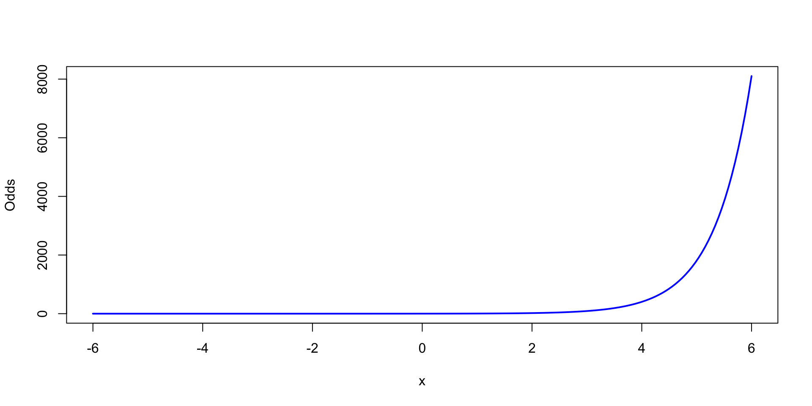
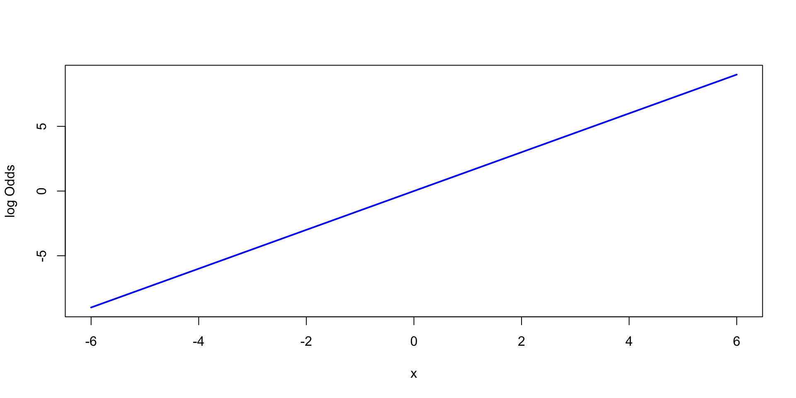
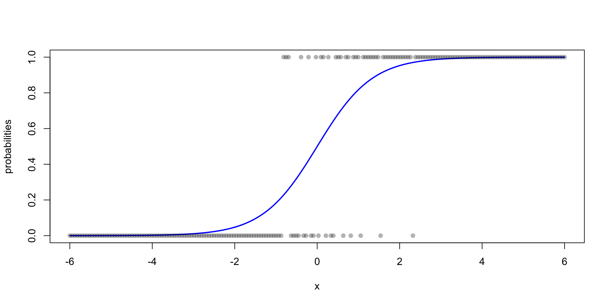

Logistic regression
What Is Logistic Regression?
Logistic regression is used for classification, not prediction of continuous values. If you want to answer a question like: “Will a person with this blood pressure have a heart attack? (Yes or No)”
- We want to calculate the probability of Yes
- Linear regression tries to fit a straight line, which can predict any number (like 1.3, -2.6), but for classification, we need outputs between 0 and 1.
Binary outcome:
Disease (Yes/No), Passed/Failed, Responded/Not Responded, ...
Disease (Yes/No), Passed/Failed, Responded/Not Responded, ...
Numerical or categorical predictors:
Age, Treatment group, BMI, Gene Expression ...
Age, Treatment group, BMI, Gene Expression ...
Logistic
Regression
Regression
Is there a statistically significant relationship
between predictors and the probability of outcome?
between predictors and the probability of outcome?
How much does each variable affect the odds
of the outcome happening?
of the outcome happening?
Predict the probability or class (Yes/No)
for new observations.
for new observations.
Probability
- Probability is a number between 0 and 1. Example: 0.8 means 80% chance. What we want is probability of every single sample being part of a specific class.

Probability
- Probability is a number between 0 and 1. Example: 0.8 means 80% chance. What we want is probability of every single sample being part of a specific class.
- Let’s say we want to use our linear regression equation \(\text{y}_i = \alpha + \beta_1 \cdot \text{x}_i + \epsilon_i\) but to predict the probabilities: \[ p^{y_i}_i = \alpha + \beta_1 \cdot \text{x}_i + \epsilon_i \] \[ y_i \in \{0, 1\} \]
- This equation tells us that the probablity of being in group 1 or 0 is a combination of a line plus some random error.
- What is the problem?
- It can give predictions below 0 or above 1. These are not valid probabilities
- Raw probabilities are not good for comparing likelihoods: A jump from 0.5 to 0.6 is not the same as 0.8 to 0.9
Odds
Instead of modeling probability, let’s change how we think about “chance.”
\[\text{Odds}=\frac{p}{1-p}\]
- Odds tell us how likely the event is compared to it not happening
- This helps us capture the relative likelihood of an outcome
- Odds are unbounded (0 to ∞), while probabilities are stuck between 0 and 1
- They account for both success and failure
- They allow us to compute ratios that have real meaning
(e.g., “This group is 3× more likely than the other”)
Examples:
- If \(p = 0.5\) → odds = 1 (50/50)
- If \(p = 0.9\) → odds = 9 (very likely)
- If \(p = 0.1\) → odds = 0.111 (very unlikely)
| p | Odds | Change in Probability | Change in Odds |
|---|---|---|---|
| 0.5 → 0.6 | 1.00 → 1.50 | +0.10 | ×1.5 |
| 0.8 → 0.9 | 4.00 → 9.00 | +0.10 | ×2.25 |
Odds
Instead of modeling probability, let’s change how we think about “chance.”
\[\text{Odds}=\frac{p}{1-p}\]
- Odds tell us how likely the event is compared to it not happening
- This helps us capture the relative likelihood of an outcome
- Odds are unbounded (0 to ∞), while probabilities are stuck between 0 and 1
- They account for both success and failure
- They allow us to compute ratios that have real meaning
(e.g., “This group is 3× more likely than the other”)
Examples:
- If \(p = 0.5\) → odds = 1 (50/50)
- If \(p = 0.9\) → odds = 9 (very likely)
- If \(p = 0.1\) → odds = 0.111 (very unlikely)
\[ \frac{p^{y_i}_i}{1-p^{y_i}_i} = \alpha + \beta_1 \cdot \text{x}_i + \epsilon_i \]
- Odds are non-linear
- Their range is 0 to ∞
Odds
Instead of modeling probability, let’s change how we think about “chance.”
\[\text{Odds}=\frac{p}{1-p}\]
- Odds tell us how likely the event is compared to it not happening
- This helps us capture the relative likelihood of an outcome
- Odds are unbounded (0 to ∞), while probabilities are stuck between 0 and 1
- They account for both success and failure
- They allow us to compute ratios that have real meaning
(e.g., “This group is 3× more likely than the other”)
Examples:
- If \(p = 0.5\) → odds = 1 (50/50)
- If \(p = 0.9\) → odds = 9 (very likely)
- If \(p = 0.1\) → odds = 0.111 (very unlikely)
\[ \frac{p^{y_i}_i}{1-p^{y_i}_i} = \alpha + \beta_1 \cdot \text{x}_i + \epsilon_i \]
- Odds are non-linear
- Their range is 0 to ∞

We need to transform them so they are completely unbouded ( -∞ to +∞) and they are linear
Log Odds
Odds grow exponentially as \(x\) increases. we’ll need to take the log
\[\text{log(Odds)}=\log{\frac{p}{1-p}}\]
- Log-odds transform the odds to a smooth, symmetric, and unbounded scale
- They turn multiplicative relationships into additive ones (e.g., 3× more likely → +1.1 log-odds)
- The log-odds scale runs from \(-\infty\) to \(+\infty\), with 0 meaning “even odds”
- In this scale:
- Negative values → more likely to be in class 0
- Positive values → more likely to be in class 1
- 0 → \(p = 0.5\)
- Negative values → more likely to be in class 0
Examples:
- \(p = 0.5 \Rightarrow \log(1) = 0\) → Even odds
- \(p = 0.8 \Rightarrow \log(4) \approx 1.386\) → Skewed toward class 1
- \(p = 0.2 \Rightarrow \log(0.25) \approx -1.386\) → Skewed toward class 0
| p | Odds | Log-Odds | Change in Odds | Change in Log-Odds |
|---|---|---|---|---|
| 0.5 → 0.6 | 1.00 → 1.50 | 0.00 → 0.405 | ×1.5 | +0.405 |
| 0.8 → 0.9 | 4.00 → 9.00 | 1.386 → 2.197 | ×2.25 | +0.811 |
Log Odds
Odds grow exponentially as \(x\) increases. we’ll need to take the log
\[\text{log(Odds)}=\log{\frac{p}{1-p}}\]

- Odds: grow rapidly, especially near \(p = 1\) → hard to model
- Log-odds: grow gradually and evenly, great for linear modeling
- It’s this log-transformed version we plug into our regression:
\[ \log\left( \frac{p}{1 - p} \right) = \beta_0 + \beta_1 x \]
Final model and interpretation
We fit a logistic regression model of the form:
\[ \log\left( \frac{p}{1 - p} \right) = \beta_0 + \beta_1 x \] Where: - \(p\) is the probability of the outcome (e.g., disease, event) - \(x\) is a continuous predictor - \(\beta_0\): intercept (baseline log-odds) - \(\beta_1\): change in log-odds per 1-unit increase in \(x\)
Example: Predicting Hypertension from BMI
Suppose we model the probability of having hypertension based on body mass index (BMI):\(\log\left( \frac{p}{1 - p} \right) = -3 + 0.15 \cdot \text{BMI}\). How do you interpret the coefficients?
- Intercept: \(\beta_0 = -3\): This is the log-odds of hypertension when BMI = 0
- Slope: \(\beta_1 = 0.15\): This is the log of the odds ratio per 1-unit increase in BMI
- In order to bring the log-odds back to odds we take \(e^\beta\)
- \(e^{0.15}=1.16\) which means: for each 1-point increase in BMI, the odds of hypertension increase by 16%, or are multiplied by 1.16 relative to the previous BMI.
Another example
Suppose we model the probability of having lung disease based on whether a person smokes or not:
\[ \log\left( \frac{p}{1 - p} \right) = -2 + 1.5 \cdot \text{Smoking} \]
Smoking is categorical (smoker, non-smoker)
\[ e^{\beta_0} = e^{-2} \approx 0.135 \] For smokers
\[ e^{\beta_1} = e^{1.5} \approx 4.48 \]
Smokers are about 4.5 times more likely to develop lung disease than non-smokers (in terms of odds)
How to calculate the probabilities
We start with the log-odds (logit):
\[ \log\left( \frac{p}{1 - p} \right) = \beta_0 + \beta_1 x \]
Now, we solve step-by-step for the probability \(p\):
Exponentiate both sides \[ \frac{p}{1 - p} = e^{\beta_0 + \beta_1 x} \]
Multiply both sides by \(1 - p\):
\[ p = e^{\beta_0 + \beta_1 x} (1 - p) \]
Expand the right-hand side \[ p = e^{\beta_0 + \beta_1 x} - p \cdot e^{\beta_0 + \beta_1 x} \]
Move \(p \cdot e^{\beta_0 + \beta_1 x}\) to the left \[ p + p \cdot e^{\beta_0 + \beta_1 x} = e^{\beta_0 + \beta_1 x} \]
\[ p (1 + e^{\beta_0 + \beta_1 x}) = e^{\beta_0 + \beta_1 x} \]
Solve for \(p\) \[ p = \frac{e^{\beta_0 + \beta_1 x}}{1 + e^{\beta_0 + \beta_1 x}} \]
The simplified form \[ p = \frac{1}{1 + e^{-(\beta_0 + \beta_1 x)}} \]
This is the sigmoid function!
- It takes any real number input
- Outputs a value between 0 and 1
How to calculate the probabilities
This is the sigmoid function!
- It takes any real number input
- Outputs a value between 0 and 1
\[ p = \frac{1}{1 + e^{-(\beta_0 + \beta_1 x)}} \]
\[ \log\left( \frac{p}{1 - p} \right) = -2 + 1.5 \cdot \text{Smoking} \] When Smoking = 0 (non-smoker):
\[ \log\left( \frac{p}{1 - p} \right) = -2 \Rightarrow \text{odds} = e^{-2} \approx 0.135 \Rightarrow p \approx \frac{0.135}{1 + 0.135} \approx 0.12 \]
Non-smokers have a 12% probability of lung disease
When Smoking = 1 (smoker):
\[ \log\left( \frac{p}{1 - p} \right) = -2 + 1.5 = -0.5 \Rightarrow \text{odds} = e^{-0.5} \approx 0.606 \Rightarrow p \approx \frac{0.606}{1 + 0.606} \approx 0.38 \]
Smokers have a 38% probability of lung disease

Logistic regression
R
In R we can use glm() function to fit GLM models:
# fit logistic regression model
logmodel_1 <- glm(obese ~ waist, family = binomial(link="logit"), data = data_diabetes)
# print model summary
print(summary(logmodel_1))
Call:
glm(formula = obese ~ waist, family = binomial(link = "logit"),
data = data_diabetes)
Coefficients:
Estimate Std. Error z value Pr(>|z|)
(Intercept) -17.357 2.973 -5.837 5.30e-09 ***
waist 17.174 2.974 5.775 7.71e-09 ***
---
Signif. codes: 0 '***' 0.001 '**' 0.01 '*' 0.05 '.' 0.1 ' ' 1
(Dispersion parameter for binomial family taken to be 1)
Null deviance: 178.71 on 129 degrees of freedom
Residual deviance: 102.79 on 128 degrees of freedom
AIC: 106.79
Number of Fisher Scoring iterations: 5Logistic regression
R
Fitted logistic model to diabetes data given the 130 study participants and using waist as explantatory variable to model obesity status.
Logistic regression
Hypothesis testing
- Similarly to linear models, we can determine whether each variable is related to the outcome of interest by testing the null hypothesis that the relevant logistic regression coefficient is zero.
- This can be performed by Wald test which is equals to estimated logistic regression coefficient divided by its standard error and follows the Standard Normal distribution: \[W = \frac{\hat\beta-\beta}{e.s.e.(\hat\beta)} \sim N(0,1)\]
# fit logistic regression model
logmodel_1 <- glm(obese ~ waist, family = binomial(link="logit"), data = data_diabetes)
summary(logmodel_1)
Call:
glm(formula = obese ~ waist, family = binomial(link = "logit"),
data = data_diabetes)
Coefficients:
Estimate Std. Error z value Pr(>|z|)
(Intercept) -17.357 2.973 -5.837 5.30e-09 ***
waist 17.174 2.974 5.775 7.71e-09 ***
---
Signif. codes: 0 '***' 0.001 '**' 0.01 '*' 0.05 '.' 0.1 ' ' 1
(Dispersion parameter for binomial family taken to be 1)
Null deviance: 178.71 on 129 degrees of freedom
Residual deviance: 102.79 on 128 degrees of freedom
AIC: 106.79
Number of Fisher Scoring iterations: 5Logistic regression how to fit the model
Unfortunately, logistic regression does not have a closed form. Therefore we need an iterative approach to minimize the cost which is called Log-Likelihood (similar to RSS for linear regression).
Logistic regression models binary outcomes \(y_i \in \{0, 1\}\)
The Bernoulli distribution gives the probability of success (1) or failure (0) for a single trial. The Bernoulli likelihood gives us the probability of observing the data, assuming a given model.
\[ P(y_i \mid p_i) = p_i^{y_i} (1 - p_i)^{1 - y_i} \] We had \(p_i = \frac{1}{1 + e^{-(\beta_0 + \beta_1 x_i)}}\)
We just replace the p in the formula and multiple the probabilities for all the samples giving us the likelihood function
\[ \mathcal{L}(\beta) = \prod_{i=1}^n \left[ p_i^{y_i} (1 - p_i)^{1 - y_i} \right] \]
Then we take the log to simplify:
\[ \log \mathcal{L}(\beta) = \sum_{i=1}^n \left[ y_i \log(p_i) + (1 - y_i) \log(1 - p_i) \right] \]
Deviance
Deviance is a number that measures the goodness of fit of a logistic regression model.
- Residual deviance:
\[ D_{\text{res}} = -2 \cdot \log \mathcal{L}_{\text{model}} \] - Null deviance:
\[ D_{\text{null}} = -2 \cdot \log \mathcal{L}_{\text{null model}} \] - The null model includes only an intercept (no predictors).
- Residual deviance:
The smaller the residual deviance, the better the model fits.
To assess whether an explanatory variable is associated with the outcome, we use the likelihood ratio test: \[ \Delta D = D_{\text{reduced}} - D_{\text{full}} = -2 \left( \log \mathcal{L}_{\text{reduced}} - \log \mathcal{L}_{\text{full}} \right) \]
\(\Delta D\) follows a Chi-squared distribution under the null hypothesis:\(\Delta D \sim \chi^2_{df}\) where \(df = \text{# of predictors removed}\)
If \(\Delta D\) is large (i.e., large drop in deviance when including the variable), it suggests a significant improvement in model fit → evidence that the variable matters.
Logistic Regression as a Generalized Linear Model (GLM)
Logistic regression is a special case of the Generalized Linear Model (GLM).
GLMs extend linear regression by allowing:
- The response variable to follow a distribution from the exponential family (e.g. binomial, Poisson)
- A link function that connects the mean of the response to a linear predictor
In logistic regression:
- The response \(Y_i \in \{0, 1\}\) follows a binomial distribution
- The logit link function: \[ g(\mu_i) = \log\left( \frac{p_i}{1 - p_i} \right) \] links the probability \(p_i = P(Y_i = 1)\) to the linear predictor
The general GLM form is: \[ g(\mu_i) = \mathbf{X}_i \boldsymbol\beta \]